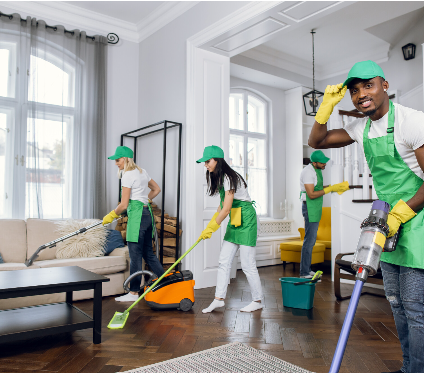
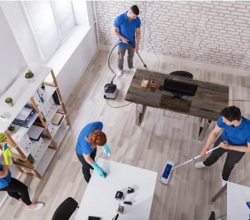
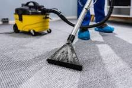
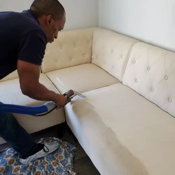

Cleaning Services in Cape Town
Browse residential and office cleaning, deep cleaning, move-in and move-out cleaning, carpet cleaning, window cleaning and upholstery cleaning. Starting prices are shown for each service.
Showing all 7 cleaning services.
Residential Cleaning

Our residential cleaning services in Cape Town are designed to keep your home spotless and comfortable. We offer regular cleaning, deep cleaning, and move-in/move-out cleaning tailored to your needs.
Estimated Duration: 2-4 hours
Starting Price: R350
Request a QuoteCommercial Cleaning

We provide comprehensive office and commercial cleaning services in Cape Town for offices, retail spaces, and other business environments. Our team keeps workspaces clean, organized, and welcoming to clients and employees.
Estimated Duration: 2-5 hours
Starting Price: R700
Request a QuoteMove-In/Move-Out Cleaning
Our move-in/move-out cleaning services ensure that your property is left spotless before you move in or after you move out. We provide thorough cleaning to meet the needs of both landlords and tenants.
Estimated Duration: 3-6 hours
Starting Price: R750
Request a QuoteDeep Cleaning
Our deep cleaning services are perfect for homes and businesses that require a more intensive cleaning approach. We tackle hard-to-reach areas and ensure every corner is thoroughly cleaned.
Estimated Duration: 4-8 hours
Starting Price: R800
Request a QuoteCarpet Cleaning

Our carpet cleaning services use professional-grade equipment and eco-friendly products to remove stains and odors from your carpets and upholstery. We ensure your carpets look and smell fresh after every cleaning.
Estimated Duration: 2-4 hours
Starting Price: R400
Request a QuoteWindow Cleaning
Our window cleaning services provide streak-free results for both residential and commercial properties. We clean windows inside and out, ensuring a clear view and enhanced curb appeal.
Estimated Duration: 1-3 hours
Starting Price: R300
Request a QuoteUpholstery Cleaning

Our upholstery cleaning services help maintain the appearance and longevity of your furniture. We use safe and effective cleaning methods to remove dirt, stains, and allergens from your upholstery.
Estimated Duration: 1-3 hours
Starting Price: R350
Request a Quote